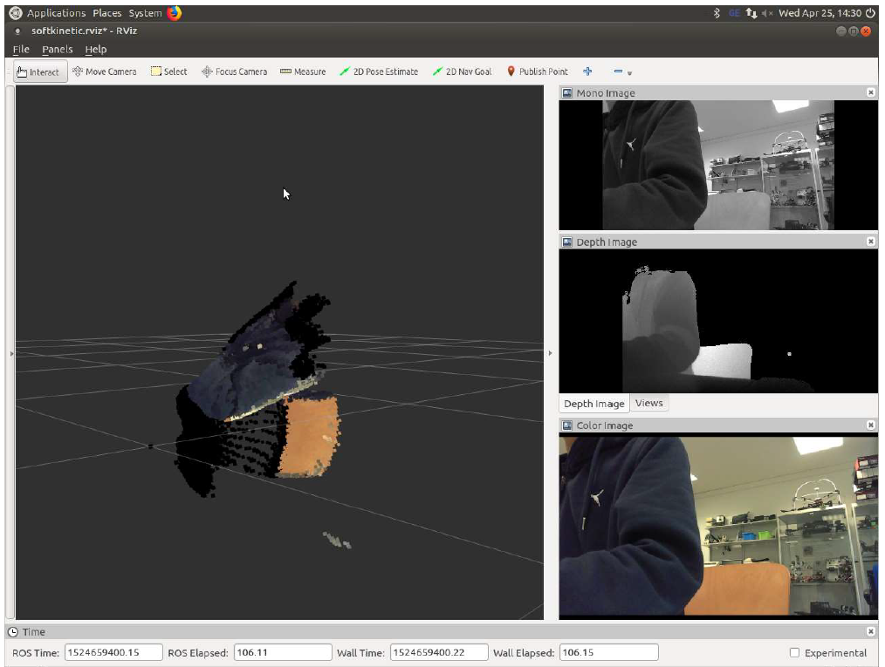
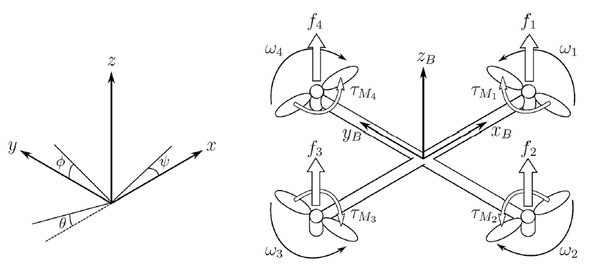

Object Tracking for Safety
This project demonstrates my ability to create practical solutions for real-world challenges through the development of an innovative method to detect moving objects and measure their distance from the camera with precision. The solution utilizes advanced object tracking techniques to accurately estimate object depth and issue proximity warnings. To achieve dependable results, the depth estimator method I developed incorporates cutting-edge scaling algorithms, resulting in precise measurements. This technology has a wide range of potential applications, including aiding in navigation for autonomous vehicles and robots as well as assisting humans in hazardous environments. My expertise in object tracking is showcased through this project, highlighting my capabilities to deliver effective solutions for complex problems.

Mobile Inverted Pendulum System
This project entailed the conceptualization, design, and realization of a two-wheeled Mobile Inverted Pendulum system. Employing a cascaded control architecture, the robot was stabilized, and operated manually with the aid of a DSM remote, as well as autonomously following pre-defined trajectories.

6-DOF Serial Link Robotic Manipulator
This project entails the design of a manipulator gripper alongside the development of a Python-based codebase for autonomous control of the serially connected motors. The project also integrates the use of a Kinect camera suite consisting of a 3D depth sensor and an RGB camera.
Slam and Path Planning implementation on MBot
This particular project was intended to be deployed on MBot, a robot designed in-house at the University of Michigan for educational purposes. However, as a result of the COVID-19 pandemic, the implementation was carried out in a simulated PyGame environment.

Invariant Extended Kalman Filtering for Robot Localization using IMU and GPS
The objective of this project is to deploy an In-EKF (Invariant-Extended Kalman Filter) based localization system and conduct a comparative analysis against an Extended Kalman Filter based localization system and a GPS-only dataset. The study will leverage the UM North Campus Long-Term Vision and LIDAR dataset, which is a comprehensive autonomy dataset collected for robotics research on the University of Michigan North Campus. The dataset encompasses data from various sensors, including planar lidar, omnidirectional camera, IMU, and GPS, to enable a detailed analysis.

Hand Gesture Control of a Robot using Intelligent Techniques
I had the opportunity to work under the supervision of Prof. Dr. Alexander Gepperth at Hochschule Fulda, Fulda, Germany, in collaboration with Dr. V. Kalaichelvi, to develop a system that translates free hand gestures to motion instructions on a TurtleBot running on Intel Atom. This involved implementing the recognition of free hand gestures using LSTM networks, utilizing TensorFlow with C++. Following this, the gestures were transformed into their respective pre-defined motions and parsed as motion instructions via ROS messages to the TurtleBot.

Non-Linear Modelling and Simulation of Unmanned Aerial Vehicle
Assisted Dr. Mary Lourde in developing different mechanical models for nonlinear mathematical modeling of a UAV for the purpose of simulation in MATLAB-Simulink environment. A PID controller was designed to control the attitude and position of the nonlinear model of the UAV, to achieve optimal performance.

Indoor Localization of an Unmanned Aerial Vehicle
Collaborated with Dr. Jagadish Nayak on the design and development of a UAV that is spatially aware in an indoor environment devoid of GPS and SLAM algorithms. The primary focus was on sensor fusion by utilizing data from LIDAR Rangefinder and Optical Flow for accurate indoor localization.